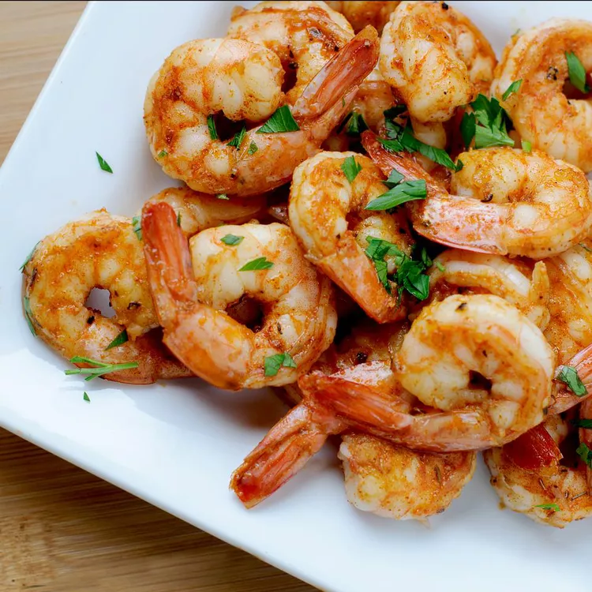

Spicy Grilled Shrimp

ingredients
- Garlic
- Coarse Salt
- Paprika
- Cayenne Pepper
- Olive Oil
- Lemon Juice
- Large Shrimp (peeled and deveined)
- Lemon (for garnish)
Steps for making Spicy Grilled Shrimp
- Preheat a grill for medium heat.
- Crush garlic and salt together in a small bowl with a fork. Mix in paprika and cayenne.
Stir in olive oil and lemon juice to form a paste.
- Combine garlic paste and shrimp in a large bowl and toss until shrimp are evenly coated.
- Lightly oil the grill grate. Grill shrimp until opaque, 2 to 3 minutes per side.
Transfer to a serving dish, garnish with lemon wedges, and serve.
Description
Grilled shrimp cook quickly so there is no need to be away from the party for long. Leave out the cayenne pepper if you'd prefer less heat and this is still a yummy dish.
Shrimp can withstand lots of mild and bold flavors so you can create many variations of this dish. Grilling keeps the party safely outside.